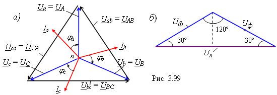

|
Если сопротивления
фаз приёмника одинаковы (см. рис. 2.97), т. е.
где Uф = Ua = Ub = Uc = UA = UB = UC - модули фазных напряжений приёмника и трёхфазного генератора. 
На рис. 2.99, а приведена векторная диаграмма напряжений и токов трёхфазного приёмника при равномерной нагрузке, носящей резистивно-ёмкостный характер: Zф = Rф - jXф. Как напряжения Ua = Ua, Ub = Ube-j120°, Uc = Ucej120°, так и токи Ia, Ib и Ic составляют симметричные звёзды, поэтому сумма комплексов фазных токов
т. е. ток в нейтральном проводе равен нулю, и нейтральный провод можно отключить. В результате получим трёхпроводную систему включения приёмника с генератором по схеме Y-Y. |
|||||